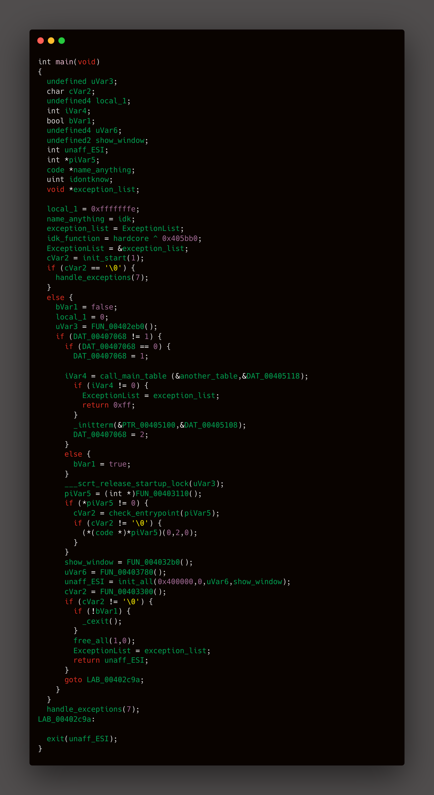
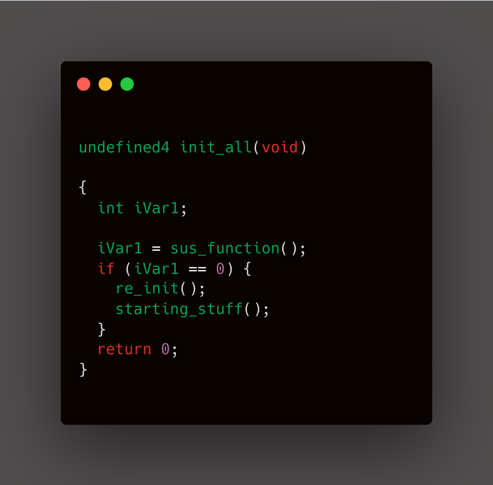
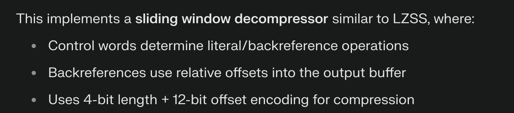
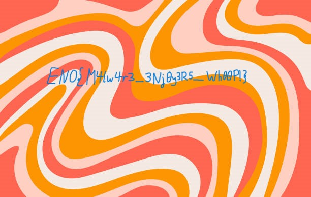

Nullcon HACKIM CTF 2025
I solved 7 challenges, but I'll share the most entertaining one.
Initial Investigation
We were given four files—two with a .bin extension and two with unknown extensions. After analyzing them with Binwalk, we found that the file b8ad5cbf8c8a3129... was malware (ApplicationFrameHost.exe) that loads payloads, while data.bin turned out to be a JPEG file. According to the challenge description, our task was to reverse data.bin and examine its contents.
After analyzing i found the main function
init_start()- is used for runtime initializationcall_main_table()- is used for setting up main function parameter
Here the most intresting function we all want to see is the init_all()
The functionality that resides in init_all(), which gets called after this setup phase. This function would handle:
1.Application-specific memory transformations
2.Core program operations
The sus_function() is being called in side init_all() function
The sus_function() internally calls another function and returns its result, thus it's acting as a wrapper
This function loads SHWAPI.dll
At this point I was not knowing what exactly i have to do , i started to go through each function to see its functionality
. After a while i finally understood that starting_stuff() is loading the actual .exe
The malware retrieves encrypted/obfuscated PE data from a predefined registry key (load_hkey), using Windows API calls
wrapper_copy function allocates RX memory via VirtualAlloc also it reconstructs PE headers
The local hex values are nothing but they just represent the alphabets in the hex formate
Like for example local_30= 0x53 represents 'S' , respectively local_2f = 0x6f represent 'o'.
These all the value form the word "Software\Realtek Inc.". So basically the malware targets the registry path: HKEY_CURRENT_USER\Software\Realtek Inc. to
extract two values:
1. CS → Contains the compressed/encrypted payload size (DWORD)
2. HS → Stores the raw payload data (REG_BINARY)
The drypt_payload function processes raw registry data from src_buf (loaded via HS key) through XOR/RC4 decryption. It reconstructs a valid PE file in
data_size doubling the allocation to prevent buffer overflows during transformation. This memory-only approach converts registry-stored payloads into executable formats without disk writes, enabling stealthy in-memory execution via
execute_reflective_dll()
The Final Flag

The code implements a modified LZ77 decompression scheme with a 16-bit control word

Decoded

ENO{M4lw4r3_3Nj0y3R5_Wh00P!}